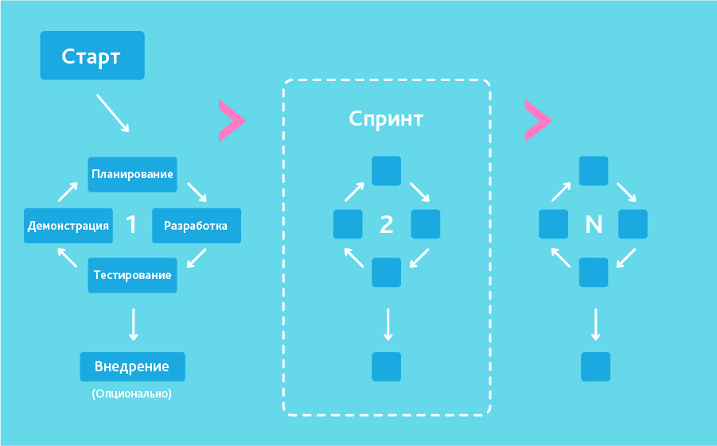

<
Сложность разработки ПО

Cемь основных методологий разработки
Методология Agile — это популярный подход, в котором основное внимание уделяется гибкости, сотрудничеству
и оптимизации процессов для реализации качественного проекта. Это итеративный подход, и приоритет в нем отдается
обратной связи от владельца продукта и адаптации к изменяющимся требованиям. Цикл разработки ПО по Agile-методологии
можно разбить на шесть этапов: планирование, проектирование, разработка, тестирование, развертывание и обслуживание.
Литература
1. Соммервилл И. Инженерия программного обеспечения, 6-е издание: Пер. с англ. М.: Издательский дом «Вильямс», 2002. С. 7. 624 с.
2. Хелмс Г. (ред.). Компьютеры: справочное руководство: Пер. с англ. М.: Мир, 1986. Т. 1. С. 13. 416 с.
3. Жоголев Е. А. Технология программирования: Учебное пособие. М.: Издательский отдел факультета ВМиК МГУ, 2004. С. 11. 216 с.
Контактная информация
По эл. почте: article@auth.or
По телефону: +7(777)888-99-00